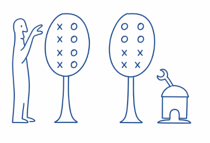
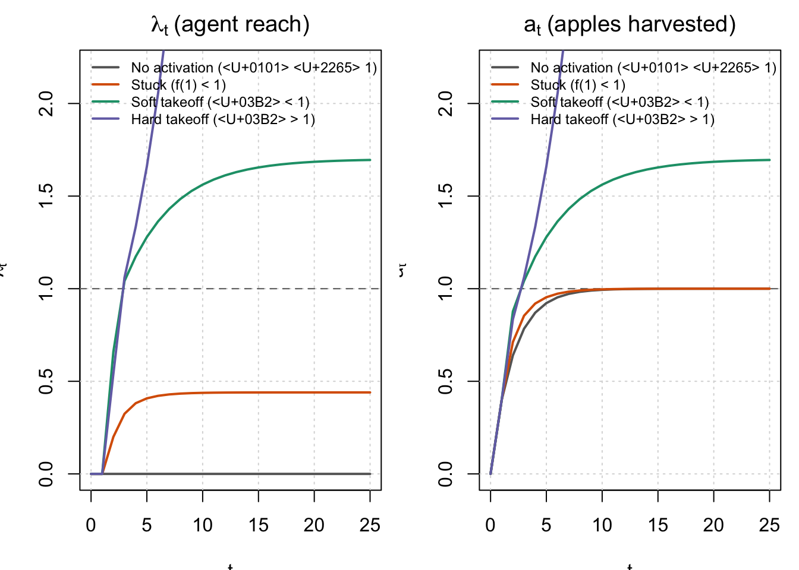
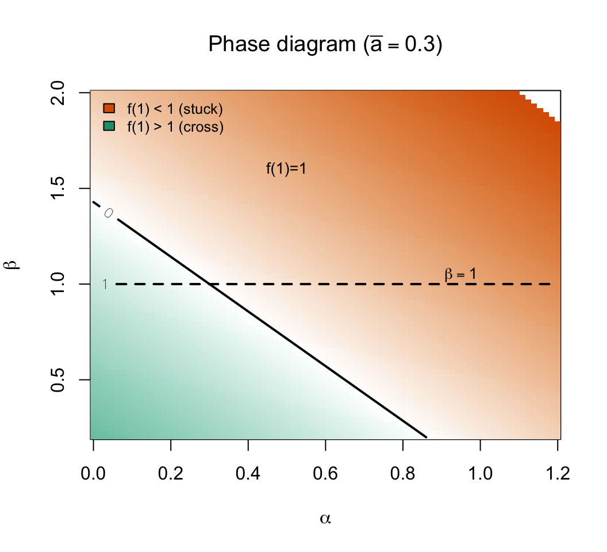
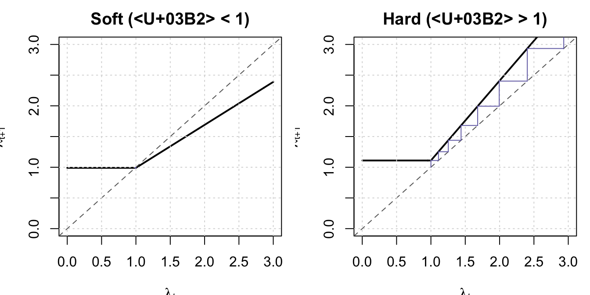
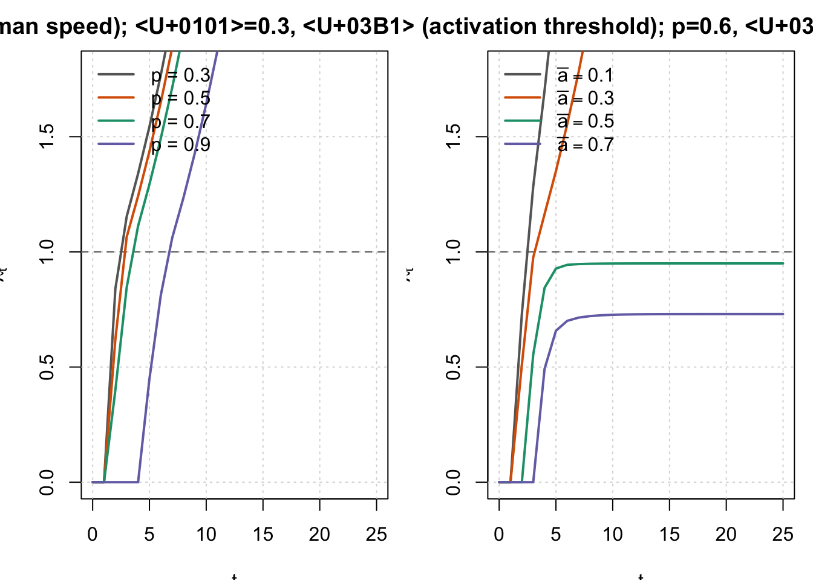

- An apple-picking model of AI work.
-
Here’s a simple model which I find useful to think about agent vs human ability in solving problems.
In short: an agent helping you do programming work is like having a robot help you pick apples. It will take care of all the apples up to a certain height, and find apples you haven’t found, but there will still be apples out of its reach.

The motivation was to help make sense of the recent ability of LLMs to autonomously push the frontier forward on various optimization and AI R&D problems. If they can make genuine discoveries themselves, at far lower cost than humans, then why aren’t we seeing a complete displacement of human work? It must be because the agents’ discoveries are in some sense “shallow”, and indeed much commentary on agent optimization is that the discoveries are not yet truly novel.
- Implications of the apple-picking model.
-
- Agents will be able to advance the human state-of-the-art on various optimization problems.
- Agents will have relatively bigger value (relative to humans) for problems that are not yet heavily optimized.
- To gauge the ability of agents we want to test not just for their ability to improve performance, but their reach.
- Other notes.
-
Landscape. A more general version would model the entire landscape. You can represent an optimization problem as \(y-f(\bm{x})\), where you’re trying to choose an \(\bm{x}\) to maximize \(y\), given some unknown \(f(\cdot)\).
Existing models of AI R&D.
Implications for AI R&D.
LLMs are suddenly able to optimize algorithms pretty well — maybe recursive-self-improvement has just kicked off. But the critical question is whether the fruit that it’s picking are low-hanging. If all the optimizations are routine, then it’ll run out pretty quickly.
LLM training is a big stack of algorithms, which we’ve been optimizing at perhaps 10X/year.
| AI replaces R&D workers. | Davidson |
| AI automates a subset of general tasks | (some models) |
| AI automates a subset of R&D tasks. | (most models) |
| AI increases productivity of R&D workers. | ?? |
| AI replace low quality R&D workers. | ?? |
| (other mechanisms?) |
Motivation:
Agents are showing the ability to autonomously optimize AI training, beating the human state-of-the-art.
Where does this end? If you can pay some tokens to improve the training function by \(x\)% better, then ….
In most models of RSI, agents only automate subtasks in R&D, but now they seem to be doing the whole thing autonomously.
Intuitively they’re only doing shallow optimizations, not deep optimizations.
We want a model so that we can define what it means to only do shallow optimizations, and test whether agents obey these predictions.
Testable predictions: (A) agents asymptote to a lower value than humans; (B) agents are relatively more useful for problems which have had less human time on them; (C) agents will asymptote to higher values if they are given better human starting points.
Basic Model
- Setup.
-
There are a continuum of apples spready uniformly on the real line.
A human can find apples over \([0,1]\), but agent can only find apples over \([0,\lambda]\), with \(\lambda<1\) (at least for now).
Humans find apples at rate \(r_H\), agents find apples at rate \(r_A\), and we use \(t_H\) and \(t_A\) to represent the time humans and agents spend searching (you can also interpret \(t_H\) and \(t_A\) as expenditure on the problem).
We can then derive apples found:
\[\text{share apples found}= \underbrace{\lambda(1-e^{-r_Ht_H+r_At_A})}_{\text{apples from bottom of tree}}+\underbrace{(1-\lambda)(1-e^{-r_Ht_H})}_{\text{apples from top of tree}}.\]
- Implication: agents asymptote to a lower level than humans.
-
Here we illustrate agent-only and human-only search curves: the agent curve rises more quickly (\(r_A>r_H\)), but asymptotes to a lower level (\(\lambda<1\)).
The shape of these curves is a good match for what we see across tasks, e.g. in METR (2024). For most tasks either (1) an agent can do it much cheaper than a human; or (2) an agent can’t do it at all.

- Implication: agents can improve on human SoTA, but only by a limited amount.
-
We can now draw the We can see that agents can improve on the humans’ SoTA performance, but in each case the value asymptotes.

- Implication: agent value and asymptote depends on starting point.
-
The plot below shows agent trajectories, each starting after a different amount of human work.
If you start an agent from scratch, it will have high marginal value, but a low asymptote.
If you start an agent after some human optimization, it will have lower marginal value, but it will be able to achieve a higher asymptote (below, starting after 1 unit of human search raises the agent asymptote from 0.5 to 0.7).

Closed Apple-Picking Model
Setup:
- Apples sit at heights in \([0,\infty)\); human reach is normalized to 1. The agent has reach \(\lambda_t \ge 0\) and picks everything below it.
- Humans pick in the band \((\lambda_t, 1]\) at a rate governed by \(p\).
- Agent reach depends on cumualtive apples harvested: they can only pick apples after some minimum threshold (\(\bar{a}\)), and then linear in \(a\).
Implications:
- Agents will get taller than humans iff \(\alpha + \beta(1-\bar{a}) > 1\)
- Agent height will be explosive iff \(\beta >1\), i.e. if eating all the apples in a 1-cm slice of tree causes you to grow 1cm higher. If not then you converge to a finite height \(\lambda^*\).
1. State variables and dynamics
Normalize human reach to 1.
- \(\lambda_t \ge 0\): agent reach (how high the AI can pick).
- \(h_t \in [0,1]\): human coverage of the human-only band \((\lambda_t, 1]\) (fraction of that band already picked by humans).
Human dynamics (one parameter \(p \in (0,1)\)): per period, a fraction \(1-p\) of the remaining human-level band gets picked, so \[h_{t+1} = 1 - p(1-h_t), \qquad h_0 = 0.\] (Equivalently \(h_t = 1 - p^t\); the recursion keeps the model closed and autonomous.)
Apples harvested (agent + humans, with clipping at 1): \[a_t = \lambda_t + (1-\lambda_t)_+ \, h_t, \qquad (x)_+ \equiv \max\{x,0\}.\] Agent gets everything up to \(\lambda_t\); humans only contribute on the band of length \((1-\lambda_t)_+\), of which fraction \(h_t\) is covered by time \(t\).
Self-improvement (activation threshold \(\bar{a}\), then affine in \(a_t\)): \[\lambda_{t+1} = \begin{cases} 0, & a_t < \bar{a} \\ \alpha + \beta(a_t - \bar{a}), & a_t \ge \bar{a}. \end{cases}\]
Parameters: \(p\) (human speed), \(\bar{a}\) (minimum progress to “turn on” the agent), \(\alpha\) (baseline capability once on), \(\beta\) (strength of recursive improvement). Initial condition \(\lambda_0\) (typically 0). Four parameters plus \(\lambda_0\).
2. Crisp conditions
A) Activation. With \(\lambda_t = 0\), \(a_t = h_t \to 1\). So the agent can ever turn on iff \(\bar{a} < 1\). If \(\bar{a} \ge 1\), \(\lambda_t \equiv 0\) forever. Activation-time approximation: \(h_t = 1 - p^t \ge \bar{a}\) \(\Leftrightarrow\) \(t \ge \ln(1-\bar{a})/\ln p\); \(p\) mainly shifts when activation happens.
B) Crossing human level. As \(t \to \infty\), \(h_t \to 1\). If \(\lambda_t < 1\), \(a_t \to 1\); if \(\lambda_t \ge 1\), \(a_t = \lambda_t\). So asymptotically \(\lambda_{t+1} \to f(1)\) with \(f(1) = 0\) if \(1 < \bar{a}\), and \(f(1) = \alpha + \beta(1-\bar{a})\) if \(1 \ge \bar{a}\). So takeoff past human level (eventually \(\lambda > 1\)) iff \[\boxed{\alpha + \beta(1-\bar{a}) > 1.}\] Interpretation: “If the orchard were fully human-level (\(a=1\)), would the next agent be at least human-level?” If not, the system stays below 1. This condition is essentially independent of \(p\) (timing, not whether).
C) Above human level: runaway vs saturation. For \(\lambda_t \ge 1\), \(a_t = \lambda_t\) and \[\lambda_{t+1} = \alpha + \beta(\lambda_t - \bar{a}).\] - Runaway / hard takeoff iff \(\boxed{\beta > 1}\) (roughly geometric growth in \(\lambda_t\)). - Soft takeoff / saturation iff \(\boxed{\beta < 1}\): convergence to \[\lambda^* = \frac{\alpha - \beta\bar{a}}{1-\beta}\] (provided the system crosses 1 first). - Knife-edge \(\beta = 1\): linear growth.
3. Illustrations
The figures below implement this model: four canonical trajectories, phase diagram in \((\alpha,\beta)\), cobweb plots of the asymptotic map, and sensitivity to \(p\) and \(\bar{a}\).





References
METR. 2024. “An Update on Our General Capability Evaluations.” https://metr.org/blog/2024-08-06-update-on-evaluations/.